Due to space limit, we only show the issue river of YouTube. You can move your mouse to a branch and view the corresponding issues in sentences and phrases. The emerging ones are highlighted.
| Noaa Radar | Viber | Ebay |
|---|---|---|
| 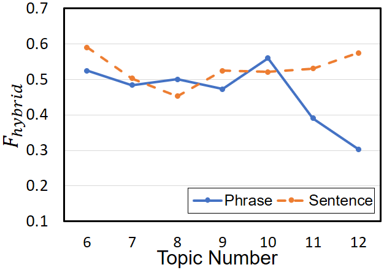 | 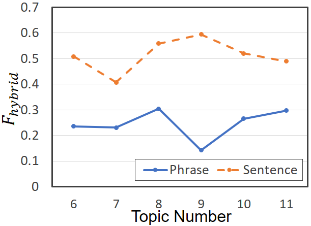 | 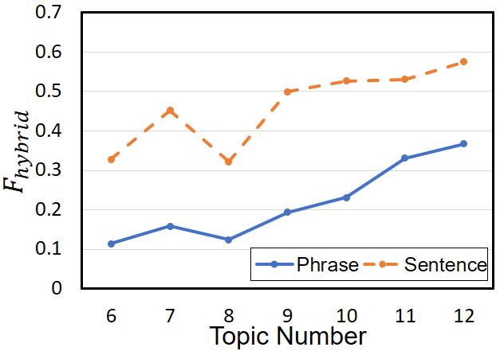 | YouTube | Clean Master | SwiftKey |
| 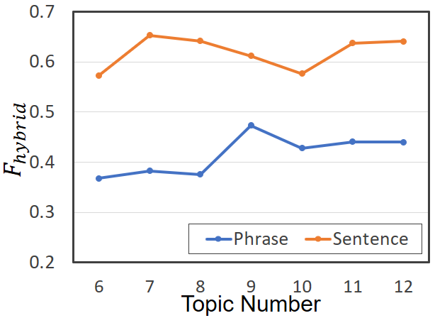 | 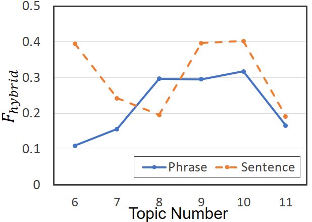 | 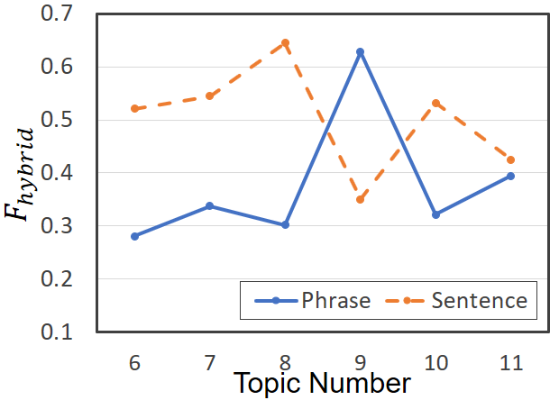 |
Discussion: In IDEA, a larger topic number can bring more prioritized app issues,which can cover more changelogs. However, more app issues may be a double-edged sword, since the metric Precision_E can be decreased. To better balance the precision andrecall, we set the topic number as 10 during experiments.
| Noaa Radar | Viber | Ebay |
|---|---|---|
| 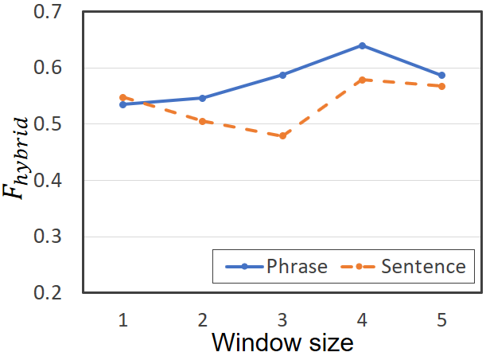 | 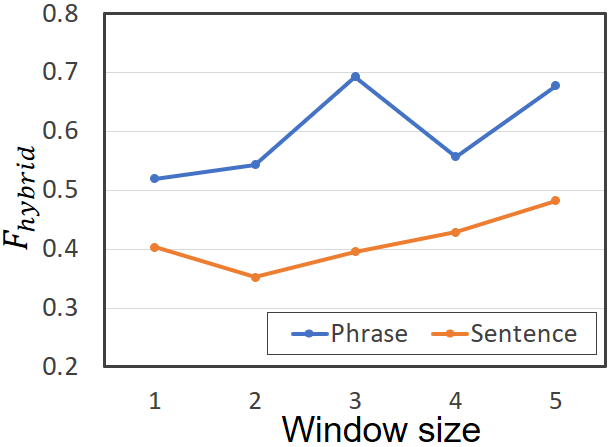 | 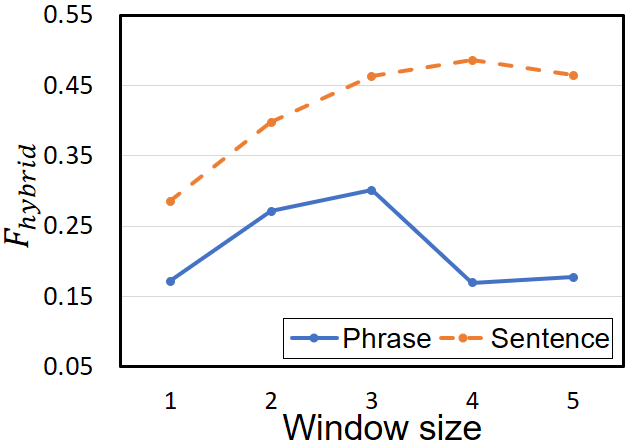 | YouTube | Clean Master | SwiftKey | 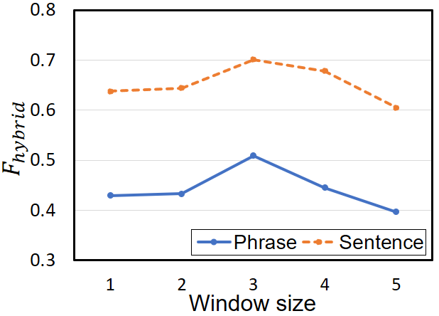 | 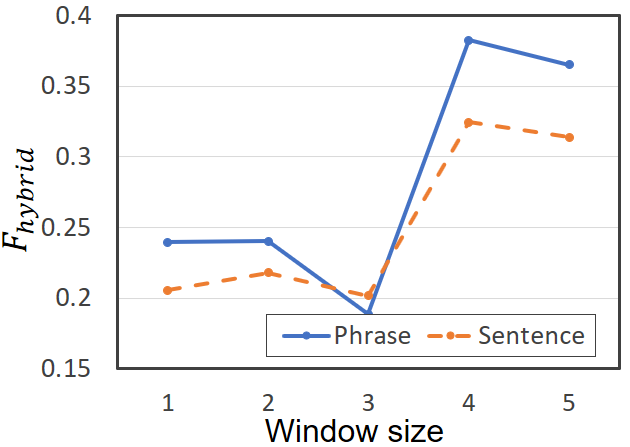 | 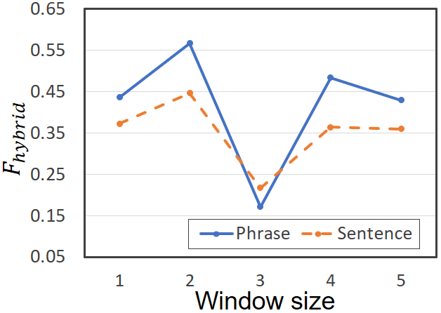 |
Discussion: For most apps (4/6, except Clean Master and SwiftKey), the values of F_hybrid present an inverted “U” shape for bothphrase-level and sentence-level issues. We attribute this to the reason that the topic distributions of the current version are strongly dependent on those of the previous versions. Larger window sizes can increase instability of the results.
For review analysis, visualization and evaluation.
Raw reviews, changelogs, and groundtruth.
Due to time limit, we only show example of Noaa Radar for understanding (Example of YouTube can be found in the paper). All the apps will be summarized in the Download part for reference.
| Version | Topic 1 | Topic 2 | Topic 3 | Topic 4 | Topic 5 | Topic 6 | Topic 7 | Topic 8 | Topic 9 | Topic 10 |
|---|---|---|---|---|---|---|---|---|---|---|
| v3.3 | weather alert: 0.84 | multiple location: 1.02 | weekly outlook: 0.89 | severe weather: 1.12 | weather channel: 1.02 | local news: 1.12 | yahoo weather: 0.71 | storm path: 1.30 | refresh delay: 1.21 | weather advisory: 1.31 |
| v3.4 | satellite view: 1.05 | local weather: 1.17 | weather channel: 0.77 | chesapeake bay: 0.81 | radar image: 0.72 | local news: 1.27 | long term forecast: 1.15 | doppler radar: 1.58 | apple watch: 0.75 | detail information: 1.14 |
| v3.5 | west texas: 1.07 | noaa map: 0.91 | weather channel: 1.37 | storm hurricane: 0.91 | radar map: 1.32 | weather forecast: 1.00 | travel across: 0.68 | battery life: 0.95 | oil field: 0.86 | location service: 0.68 |
| Topic | v3.3 | v3.4 | v3.5 |
|---|---|---|---|
| Topic 1 | I want to see next |
Easy to use and you can zoom in and out when the radar be move to see how close the rain be to your location: 2.07 | With west texas weather change at the drop of a hat it good to know the direction and intensity of a storm: 1.77 |
| Topic 2 | Accurate and easy to access use: 2.20 | While travel this app keep us inform on the local weather: 2.10 | Reliable and accurate and easy to use: 3.08 |
| Topic 3 | This be the first weather track app that i have use it do the job well: 1.58 | Would like radar activity to show upcoming: 1.81 | I find it very useful before head out on the motorcycle: 1.57 |
| Topic 4 | Work well to watch predetermine location be severe weather: 2.38 | Live aboard my boat and travel up and down the chesapeake bay on her and other boat do delivery: 1.54 | It show roughly the last 40 minute of weather so you can see where bad weather be head and the severity of it: 2.00 |
| Topic 5 | I pay for this app think i would get a good solid weather app but i find that the forecast be terrible: 2.13 | Best way to see what kind of weather head my way in real time with pinpoint accuracy and clarity: 2.44 | Most free weather apps have as good or better radar map: 2.30 |
| Topic 6 | I have try all the radar apps from local tv station and they be all unreliable: 1.58 | Would rather have combine with the weather live app instead of have |
I pay |
| Topic 7 | Great to see weather alert across the country and keep any eye on what be head your way: 1.71 | I love the live radar: 1.61 | It nice to not only get alert to my own weather situation but to also get alert when my family be have alert as well: 12.78 |
| Topic 8 | Most accurate in predict the expect time of thunderstorm as well as the possibility of tornado: 1.96 | Accurate report and easy to use: 3.21 | Use all the time and it never miss tell it like it be: 2.14 |
| Topic 9 | The radar refresh be a little limit and slow but the forecast be fairly accurate: 1.68 | The application for apple watch look great and work really well also: 5.30 | I wish the app load faster and the loop work smoother: 1.88 |
| Topic 10 | When tap on a weather advisory sector it would be nice to access the detail of the advisory by tap any area of the pop up vs have to tap the little symbol: 1.86 | I would like to see color specific warn and watch area: 2.30 | The panel be show high at my location in the high |
| Version | Date | Changelog |
|---|---|---|
| 3.3 | 4/23/2015 | (1) Now with Apple Watch support! Stay up to date with warnings & alerts sent directly to your wrist and react immediately. Take just a Glance for a quick weather check and get 24-hour forecast with just a swipe. | 3.4 | 7/8/2015 | (1) Travel with NOAA Radar Pro! The app can now automatically update you on weather & alerts in your current location as you commute or travel. (2) Great improvements for the Apple Watch app. Detailed info for weather alerts is on your wrist - just tap the 'full text' control under any alert or the alert screen in the watch app. More weather parameters: swipe up to see feels like, pressure, wind, visibility and other current conditions data! (3) Wider Radar coverage. We're excited to bring radar maps for Australia, Japan and Europe! Check your app's settings. European coverage includes: the United Kingdom, Ireland, France, the Netherlands, Belgium, Luxembourg, Liechtenstein, Germany, Switzerland, Italy (western), Denmark (southeast), Poland (western), Czech Republic, Austria (northwestern). |
Discussion: NOAA Radar gets high rating in App Store (avg., 4.5), and thereby IDEA detects few app aspectes with good rating, such as "apple watch" which is reflected in the corresponding changelog v3.4. But these aspects are hot in that version since the previous version v3.3 adds Apple Watch support. Also, the emerging issues "travel across" in v3.5 can be attributed to the update of v3.4. App bugs such as "wish the app load faster and the loop work smoother" for Topic 9 of v3.5 and requested features such as "Would like radar activity to show upcoming" for Topic 3 of v3.4 are also captured.